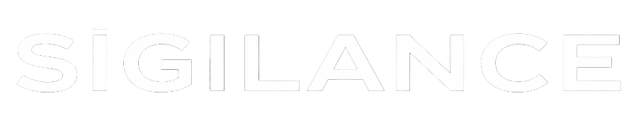

Combining 10+ years of SAP expertise with the next generation of Python-driven intelligent automation. Combinando +10 anos de expertise em SAP com a próxima geração de automação inteligente em Python.
Moving beyond the limitations of legacy VBA and Excel, Project ARIA represents the pinnacle of SAP Security automation. Designed for high-speed S/4HANA migrations, it leverages Python to handle complex data structures with surgical precision.
Superando as limitações do legado VBA e Excel, o Projeto ARIA representa o ápice da automação de Segurança SAP. Projetado para migrações S/4HANA de alta velocidade, ele utiliza Python para manipular estruturas de dados complexas com precisão cirúrgica.
Automated role mapping, intelligent risk analysis, and seamless integration with modern SAP environments.
Mapeamento automatizado de funções, análise inteligente de riscos e integração perfeita com ambientes SAP modernos.
# Initializing ARIA Engine...
import sap_security_automation as ssa
aria = ssa.Engine(mode='S4HANA_MIGRATION')
# Processing legacy data...
aria.analyze_vba_logic(source='legacy_excel_v3.xlsm')
aria.convert_to_python_logic()
>> Optimization complete. Speed increase: 450%
"Sigilance" — The fusion of "Sigil" (Seal of Authority) and "Vigilance". "Sigilance" — A fusão de "Sigil" (Selo de Autoridade) e "Vigilance" (Vigilância).
A deep-rooted history in SAP Security, navigating through complex global environments and evolving threats. Uma história profunda em Segurança SAP, navegando por ambientes globais complexos e ameaças em constante evolução.
Expertise in the latest SAP technology stack, ensuring secure and efficient transitions to S/4HANA. Expertise na última pilha de tecnologia SAP, garantindo transições seguras e eficientes para o S/4HANA.
Mastery of Governance, Risk, and Compliance, implementing robust access control frameworks. Domínio de Governança, Risco e Compliance, implementando estruturas robustas de controle de acesso.